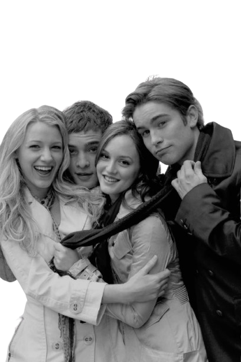
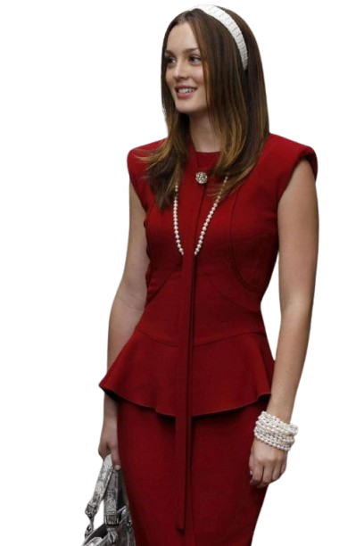

Sobre a serie
Gossip Girl é uma série adolescente cheia de drama, luxo e segredos, ambientada no lado mais rico de Manhattan, em New York City.
A história gira em torno de um grupo de jovens da elite que estudam em escolas super exclusivas e vivem cercados de festas, romances e traições.
Mas o grande diferencial da série é a presença da misteriosa “Gossip Girl” — uma pessoa anônima que expõe todos os segredos deles na internet 😈
Sinopse
Na elite de New York City, um grupo de jovens privilegiados vive entre festas luxuosas, romances intensos e muitos segredos.
Suas vidas são constantemente expostas por um blog anônimo conhecido como “Gossip Girl”, que revela fofocas e escândalos para toda a sociedade.
Quando Serena van der Woodsen retorna misteriosamente à cidade, a dinâmica do grupo muda, reacendendo rivalidades — especialmente com sua melhor amiga, Blair Waldorf.
Ao longo da série, amizades são testadas, relacionamentos se complicam e segredos vêm à tona, enquanto todos tentam descobrir: quem está por trás da Gossip Girl?

Personagens
Blair WaldorfBlair Waldorf é a rainha indiscutível do socialite de Manhattan. Elegante, inteligente e determinada, Blair sempre busca o controle de sua vida e do círculo social ao seu redor.
Ela é ambiciosa e manipuladora, mas também mostra uma lealdade profunda aos amigos que realmente ama.
Sua amizade com Serena é intensa, marcada por competição e apoio mútuo.Ao longo da série, Blair enfrenta desafios emocionais e familiares e vive um romance central e turbulento com Chuck Bass,
que define grande parte de sua evolução como personagem.

Serena Van der Woodsen
Serena van der Woodsen é a garota mais comentada do Upper East Side. Conhecida por sua beleza, carisma e elegância natural,
Serena retorna a New York City depois de um período afastada, reacendendo velhas amizades e rivalidades. Embora pareça ter uma vida perfeita, ela carrega segredos e decisões do passado que a tornam vulnerável.
Serena navega por romances complicados, especialmente com Dan Humphrey, seu interesse romântico central, e enfrenta desafios em sua amizade com Blair Waldorf, que oscila entre rivalidade e cumplicidade.
Sua trajetória é marcada pelo desejo de encontrar seu próprio caminho, equilibrando a fama, a família e o amor.
Nate Alchibard
Nate Alchibard é o garoto perfeito da elite, conhecido por sua beleza e simpatia. Embora pareça ter a vida ideal, Nate lida com questões de identidade, moralidade e responsabilidade familiar.
Ele é leal aos amigos e frequentemente atua como mediador entre os conflitos do grupo. Seus relacionamentos amorosos, incluindo ligações com Blair e Serena, mostram sua dificuldade em equilibrar desejos pessoais e expectativas sociais, tornando-o um personagem cativante e multifacetado.
Chuck Bass
Chuck Bass é o herdeiro problemático e sedutor de uma grande fortuna. Desde cedo, aprendeu a usar sua riqueza e inteligência para manipular situações a seu favor, mas por trás de sua arrogância e comportamento impulsivo, esconde vulnerabilidades emocionais profundas.
Chuck é um anti-herói que encontra equilíbrio e redenção no romance com Blair Waldorf, enfrentando conflitos familiares e pessoais que moldam sua evolução ao longo da série.
Seu carisma e complexidade o tornam um dos personagens mais icônicos.